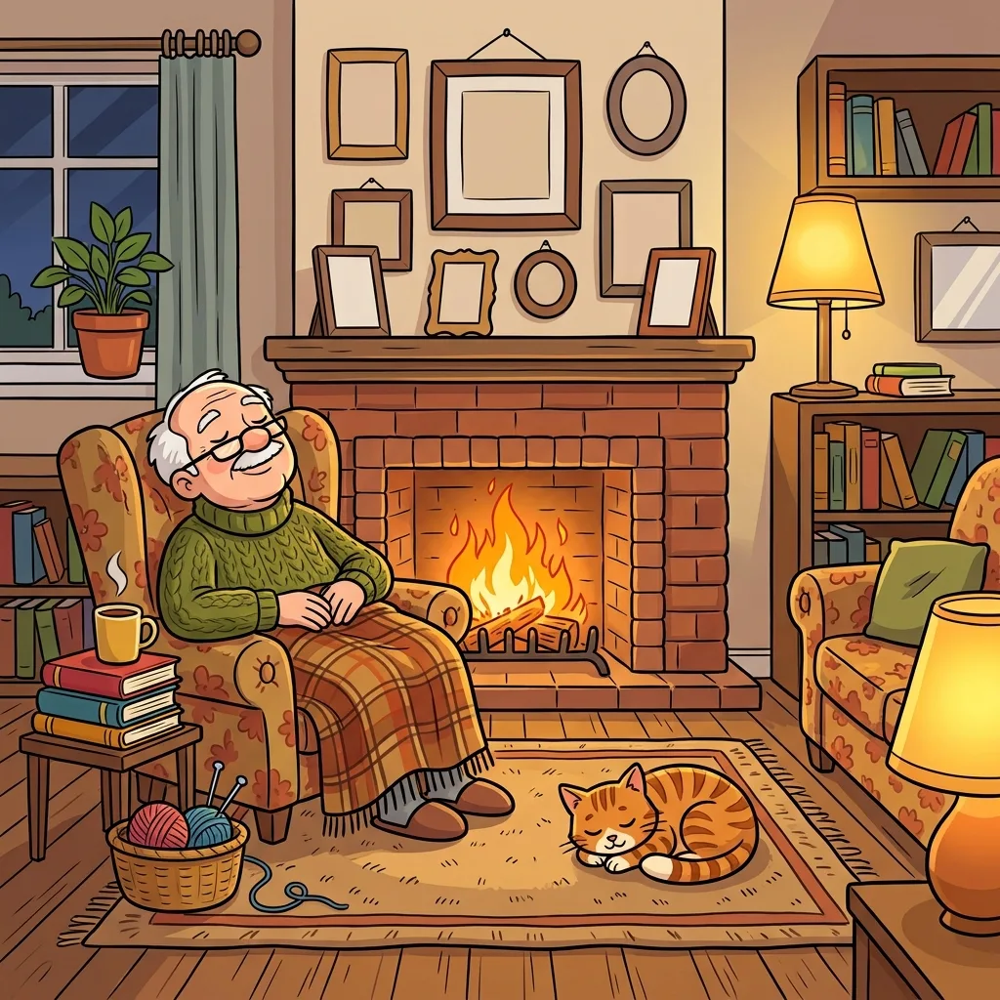
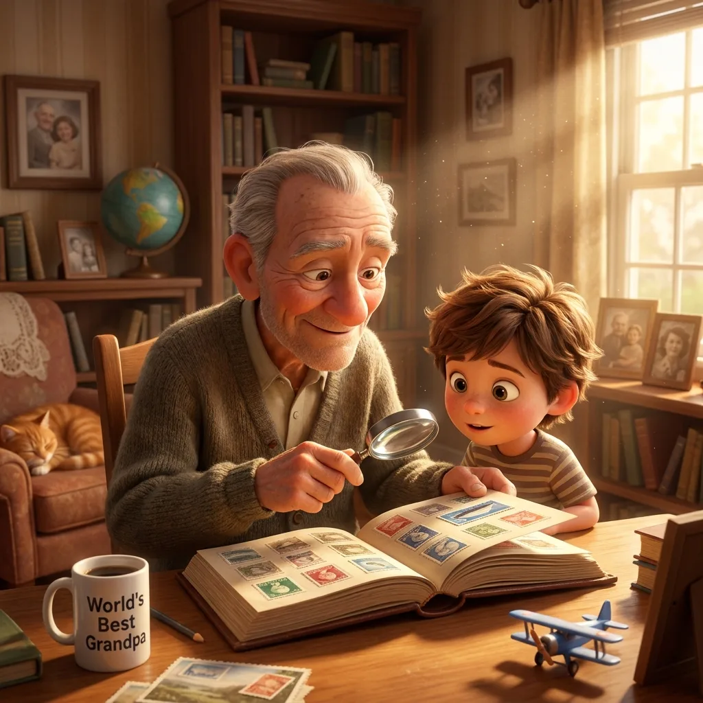

Spot the Difference for Dementia Patients: Why It Works and How to Use It Well
If you care for someone living with dementia, you have probably discovered how hard it is to find activities that are engaging without being childish, and challenging without being frustrating. Spot-the-difference puzzles sit in a rare sweet spot — and that's why they show up again and again in memory-care activity rooms.

Why this puzzle format suits dementia care
- It relies on recognition, not recall. Many word games and trivia quizzes depend on retrieving facts from memory — exactly what dementia makes difficult. Comparing two pictures uses visual perception and attention, abilities that often remain much stronger, so the person gets to succeed with skills they still have.
- There is no "general knowledge" barrier. A picture of a garden is meaningful to everyone. There's nothing to have forgotten, no question that exposes a memory gap in front of others.
- It's an adult activity. Finding differences between two pictures is something newspapers have printed for adults for a century. Handing someone a puzzle does not carry the sting that a children's coloring book can.
- It works one-on-one or in groups. Print the same puzzle for a table of four and let people hunt together — the conversation ("look at the bird!", "the flower changed color") is as valuable as the puzzle itself.
- Short, flexible sessions. A puzzle can occupy five minutes or forty. There's no losing streak, no game to abandon halfway.
Choosing the right difficulty
The single most common mistake is printing puzzles that are too hard. Cluttered scenes with subtle changes cause frustration, and frustration is remembered as a feeling long after the activity is forgotten. A good starting recipe:
- Early-stage dementia: a medium scene with 6–8 differences is usually comfortable. Let the person tell you when it's too easy.
- Mid-stage: use easy puzzles — fewer objects, larger artwork, and bold, obvious changes such as an object that disappears entirely or changes to a completely different color.
- Later stages: the puzzle may become a "looking and talking" activity rather than a hunt. Point to an object, name it together, and celebrate any difference noticed. That still counts.
Print size matters as much as difficulty. Always print one puzzle per page, never two, and choose high-contrast artwork. If the person wears glasses, check they're wearing them before deciding a puzzle is "too hard".
Practical session tips from activity professionals
- Do the first one together. Model the activity: "I'm looking at the tree… is the tree the same in both pictures?" Then hand over the pencil.
- Circle, don't just point. Give the person a bright marker to circle each find. The growing set of circles is visible progress and a little trophy.
- Say the number of differences out loud and write it at the top. Knowing there are "5 to find" turns an open-ended task into a completable one.
- Quit while it's fun. If three of five differences are found and energy dips, reveal the last two together using the answer key and end on success.
- Repeat favorites. Repetition is comforting, and with generated puzzles you can print a fresh-but-similar puzzle from the same theme every day.
Where to get unlimited free puzzles
Puzzle books work, but they run out, cost money, and offer one fixed difficulty. Our free generator solves all three problems: choose a theme (garden, ocean, space, or farm), pick Easy, and print a brand-new puzzle with a separate answer key page — as many as you need, forever, at no cost.

No signup, no watermark, answer key included.
Open the free generator
A note on what to expect
Puzzles are not a treatment, and no activity will halt dementia's progression. What a well-chosen puzzle can do is provide focused, calm engagement; a sense of competence; a shared activity that isn't a screen; and a genuinely pleasant half hour. In dementia care, that is a great deal.